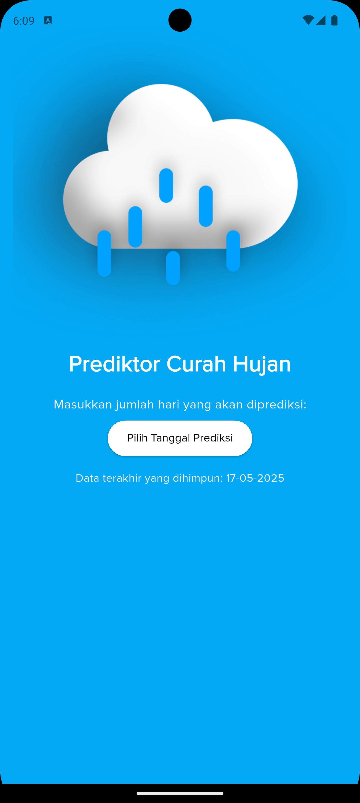
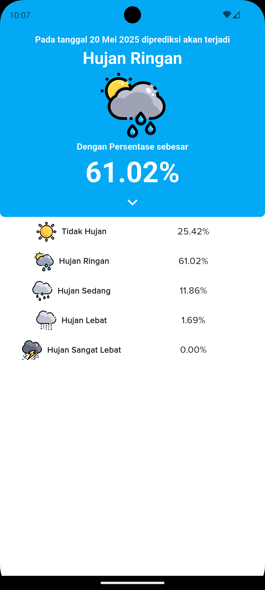
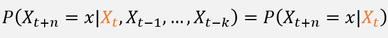

Research Overview
PredWeatherMarkov is an academic research project focused on applying Markov chain models for weather pattern prediction in tropical regions. This study combines rigorous statistical modeling and practical implementation, resulting in a scientifically validated weather prediction system accessible through a dedicated mobile application.
Application Interface Visualization
The images below display the mobile interface of PredWeatherMarkov, which implements the Markov chain-based weather prediction model. The app is designed to provide an intuitive user experience for accessing real-time weather forecasts and insights.


The application interface presents Markov chain-based weather predictions, visualizations of weather patterns, prediction accuracy metrics, and historical data analysis tailored for the Bogor region.
Research Contributions
- Markov Chain Weather Modeling: Novel application of first-order Markov chains for local weather prediction
- Academic Research Documentation: Comprehensive research methodology and results analysis
- Practical Implementation: Mobile application demonstrating real-world applicability
- Statistical Analysis: Performance evaluation and accuracy measurement of prediction models
- Cross-Platform Development: Technical implementation using Flutter/Dart
Technical Architecture
Markov Chain Implementation
The core prediction engine utilizes first-order Markov chains to model weather state transitions:

Where weather states include temperature ranges, precipitation levels, and atmospheric pressure conditions.
Technology Stack
Dart/Flutter
Cross-platform mobile application framework for iOS and Android development
Statistical Modeling
Advanced probability theory and time series analysis for weather prediction
System Architecture
- Data Collection: Historical weather data aggregation and preprocessing
- Model Training: Markov chain transition matrix calculation from historical patterns
- Prediction Engine: C++ backend processing current conditions to generate forecasts
- Mobile Interface: Flutter app displaying predictions with intuitive visualizations
- Data Synchronization: Real-time updates and offline data management
Research Methodology & Results
The research employed rigorous statistical analysis and experimental validation to demonstrate the effectiveness of Markov chain models in weather prediction:
- Prediction Capability: The application is capable of predicting weather for up to 4–5 days ahead; beyond this range, the Markov model reaches a steady state and predictions lose specificity.
- Data Analysis: Comprehensive evaluation using historical weather data from BMKG (Indonesian Meteorological Agency)
- Statistical Validation: Transition matrix analysis and probability distribution modeling
- Academic Presentation: Research findings documented in scientific poster format
- Technical Implementation: Practical demonstration through mobile application prototype
Research Impact
This research contributes to the field of computational meteorology by:
- Demonstrating practical application of Markov chains in weather prediction for tropical regions
- Providing methodology for local weather modeling using limited historical data
- Bridging theoretical statistical models with real-world mobile applications
- Contributing to understanding of weather pattern transitions in Indonesian climate
- Establishing baseline performance metrics for further research enhancement
Research Poster
The following scientific poster comprehensively documents the research findings and methodology, and was presented for the accreditation of the Mathematics Program at Pakuan University as well as the Bogor Innovation Awards 2025 competition.

This poster was presented for the accreditation of the Mathematics Program at Pakuan University and submitted to the Bogor Innovation Awards 2025. It highlights the innovative application of Markov chains for weather prediction in Bogor, achieving 61.02% accuracy, and details the methodology, statistical analysis, and real-world impact of the research.